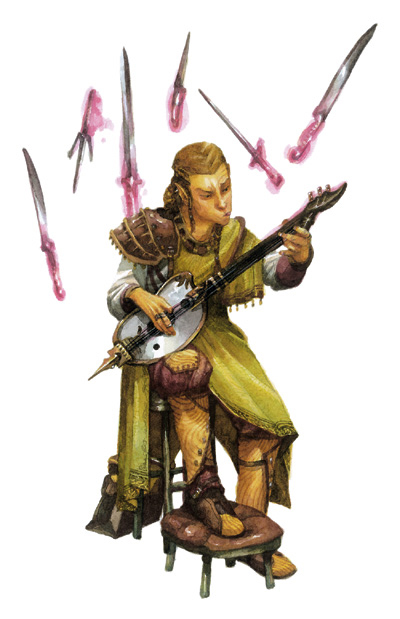

魔法歌手（勿与《费伦大陆魔法志》中的「魔法舞者」混淆）在费伦大陆上非常罕见，他们学习且遵循古老的精灵吟游诗人技艺与传统。虽然他们跟吟游诗人一样，都 是使用音乐与诗歌创造魔法效果；不过，一般的吟游诗人是透过音乐与诗歌从魔法网络（the Weave）汲取能量，但魔法歌手将他们自己与魔法网络同化，让他们自己成为魔法网络的一部分。因此，比起一般的吟游诗人，魔法歌手可以创造出更加强大且 种类更加繁多的魔法效果。
绝大多数的魔法歌手都是吟游诗人或法师兼职吟游诗人（尤其是附魔师兼职诗人），不过也有一些术士兼诗人或牧师兼 诗人踏上这条道路，至于其它职业出身的角色则几乎不会成为魔法歌手。虽然大部分的魔法歌手都是精灵或半精灵（后者相较之下少见的多），不过目前已知至少有 一位拥有精灵血统的人类成为魔法歌手－戴尼洛�B塔恩（Danilo Thann）。
非玩家人物的魔法歌手通常都出现在传统的精灵国度中，而且他们扮演的角色也与其它文化中的吟游诗人不同。所有受精灵文化熏陶成长的精灵与半精灵都非常尊敬魔法歌手，但许多没有接触过精灵文化的人都无法了解他们独特的天赋与才能。
生命骰：d6
职业条件：
种族：必须拥有精灵血统（至少八分之一）
技能：神秘知识8级 Knowledge（Arcane），表演（任何双手演奏乐器、歌唱、以及其它）8级 Perform
专长：进阶反制法术（注）Improved Counterspell，专攻技能－表演 Skill Focus（Perform）
施法能力：无须事先准备就能施展1级秘术
--
进阶反制法术 Improved Counterspell [一般专长]
描述：由于你明白了魔法间的细微差距，因此能用更有效的方法反制对手的法术。
效果：你反制对手的法术时无需使用相同的法术，但仍需使用同一学派的法术，且该法术必须高于对手的法术一级以上。
--
职业技能：
以体质为关键属性者：集中 Concentration
以智力为关键属性者：手艺 Craft，解读文件 Decipher Script，知识（任何）Knowledge（any），法术辨识 Spellcraft，学习语言 Speak Language
以智能为关键属性者：专业 Profession
以魅力为关键属性者：欺骗 Bluff，交涉 Diplomacy，易容 Disguise，收集信息 Gather Information，表演 Perform，使用魔法装置 Use Magical Device
每级技能点数：4+智力调整值
职业特性：
擅长武器与防具 Weapon & Armor Proficiency：
魔法歌手不擅长使用任何武器或防具。
每日法术数量 Spells per Day/Spell Known：
魔 法歌手每升一级，每日「秘术」法术数量会增加，就像先前的「秘术」施法职业一样，但不能获得之前「秘术」施法职业等级的其它能力（比如增进奖励专长等）。 魔法歌手等级加上所具备的其它「秘术」施法职业，决定其每日法术数量、可知法术与施法者等级。如果该角色成为魔法歌手之前有多个基础秘术施法职业，则必须 选择要将此升级的魔法歌手等级加在哪一个基础职业上。
吟唱 Bardic Music：
由于魔法歌手仍持续锻炼他们使用音乐与诗歌创造魔法效果的技巧，因此他可以将此职业等级与原先的吟游诗人等级（或其它给予相同能力的职业）累加，以决定每日的使用次数与吟唱效果。
魔法歌谣 Spellsong：
第1 级起，魔法歌手可以临时将一个已准备的法术转化成他所知法术列表上的附魔系法术（但至少须比原法术低1级）。此能力与牧师转化神术的能力十分类似。他也可 以使用此能力转化无需事先准备的法术，只不过也只能将该等级的法术格转化成他所知法术列表上的附魔系法术（且仍须比原法术至少低1级）。
不论原先被转化的法术是否事先经过准备，使用魔法歌谣能力施展的法术都一定需要「语言」（歌唱）与「手势」（弹奏乐器）两种法术成分。此能力可取代原法术的语言、手势、材料、以及器材法术成分，但仍无法取代昂贵法术材料与经验值耗费。
使用此能力转化的法术豁免难度改为【歌手魅力调整值+欲转化法术的等级+2】。
--
注：在下认为应该是【10+歌手魅力调整值+欲转化法术的等级+2】才对，不然转化后法术的豁免难度反而下降甚多。
--
强力咒歌 Compelling Song [超自然能力]：
成为魔法歌手之后，他将更加了解音乐与魔法之间的关联。第1级起，当使用吟唱能力时，他可以将此职业等级加到表演技能的检定结果上；此外，当使用「迷魂」与「暗示」吟唱能力时，他也可以将此职业等级加进该能力的豁免难度。
进阶破咒曲 Improved Countersong [超自然能力]：
第3级起，魔法歌手学会如何更有效率地使用音乐干扰别人的法术，当他使用破咒曲能力之时，表演技能的检定结果将得到+10奖励。
增加吟唱范围 Amplified Music [超自然能力]：
第5 级起，魔法歌手将成为使用音乐来创造以他为中心产生魔法效果的专家。他可以增加大多数吟唱效果（破咒曲、迷魂、提振士气、提振战力）的影响范围，每个魔法 歌手职业等级可以多增加5�辗段А４送猓�迷魂效果的影响距离将增为原来的3倍（也就是说，迷魂的影响范围将增为3倍，再加上每魔法歌手职业等级5�眨�。
附表：魔法歌手
等级 基本攻击加值 强韧�M反射�M意志豁免加值 职业特性
1 +0 +0�M+2�M+2 吟唱，魔法歌谣，强力咒歌
2 +1 +0�M+3�M+3 －
3 +2 +1�M+3�M+3 进阶破咒曲
4 +3 +1�M+4�M+4 －
5 +3 +1�M+4�M+4 增加吟唱范围
--
资料来源：费伦大陆种族志《Races of Faerun》
译者：一凡